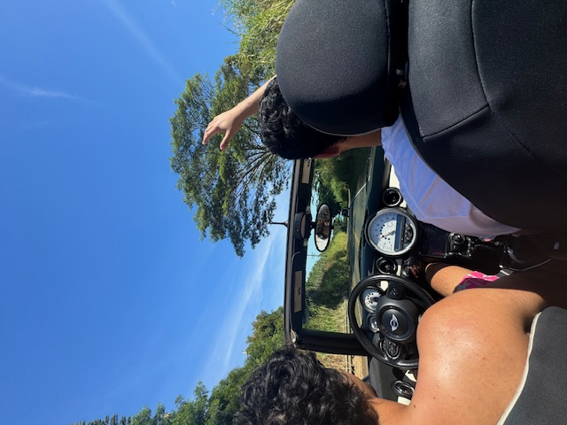
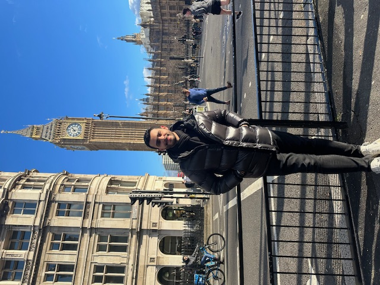
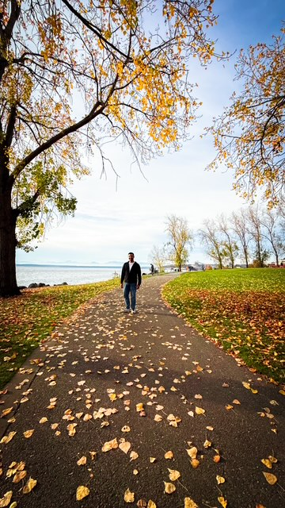
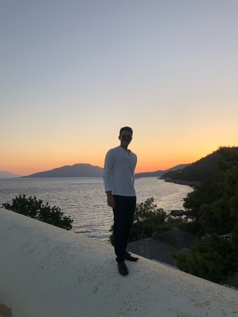
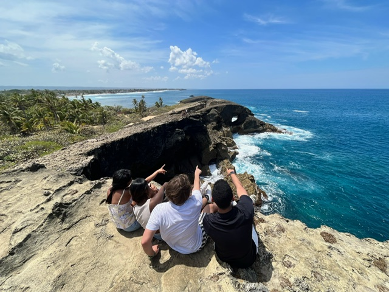
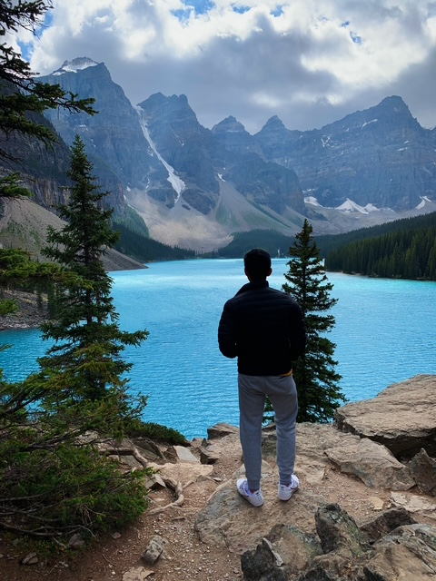

Hawaii 🌺
“Traveling around Maui taught me that work should be meaningful because life is too short.”
"Driving through Maui's winding roads and seeing the endless beauty of the island was a grounding experience. The locals' pure hearts and smiles were a reminder that life's simplest joys hold the most value."
Portugal 🇵🇹
“Work should be a means to live, not the other way around.”
"Sitting by the water in Lisbon, surrounded by families enjoying long lunches, reshaped my priorities."

London 🇬🇧
“London inspired me with its unique blend of art and business.”
"From Big Ben to Shoreditch, the mix of art and commerce proved creativity and business can harmoniously coexist."
Seattle 🌲
“Seattle reminded me of the importance of education and family.”
"Seeing my brother's journey for his Ph.D. inspired me to value learning and growth."
Vermont 🚗
“Taking risks can lead to unforgettable rewards.”
"That solo drive to Vermont was about proving to myself that stepping out of my comfort zone can lead to unforgettable experiences."

Turkey 🇹🇷
“This trip was pivotal in my journey toward independence.”
"Kayaking in Bodrum's crystal waters felt like a moment of pure freedom and a step toward independence."
Iceland ❄️
“Proved that bucket-list dreams can come true.”
"Standing between Iceland's glaciers reminded me that with planning, even the wildest goals are achievable."

Puerto Rico 🌴
“Exploring Puerto Rico built my character and inspired me to connect with nature.”
"Climbing cliffs in Puerto Rico was unforgettable and reminded me of the importance of stepping out of my comfort zone."
Canada 🍁
“Adventures in Banff taught me resilience and strength.”
"Riding a motorcycle through the Rockies was liberating, like conquering both the road and my fears."
